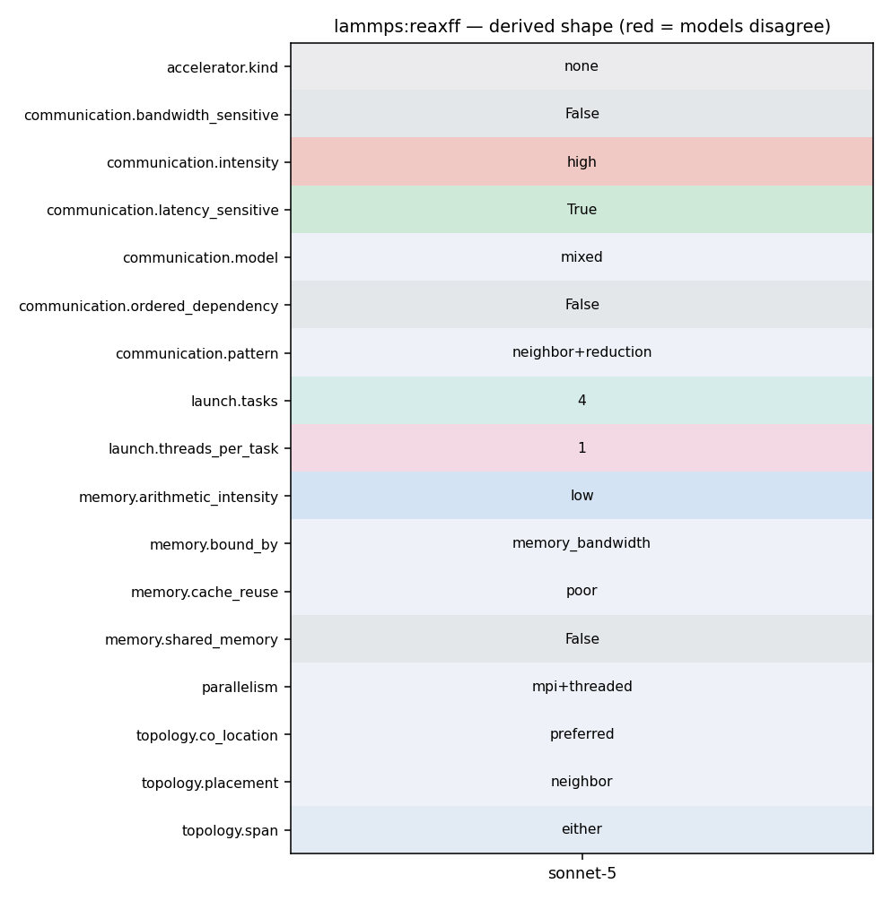

mpirun -np 4 lmp -in in.reaxc (pair_style reaxff ...; fix qeq/reaxff)
761 762 /* ---------------------------------------------------------------------- */ 763 764 int FixQEqReaxFF::CG(double *b, double *x) 765 { 766 int i, j; 767 double tmp, alpha, beta, b_norm; 768 double sig_old, sig_new; 769 770 int jj; 771 772 pack_flag = 1; 773 sparse_matvec(&H, x, q); 774 comm->reverse_comm(this); //Coll_Vector(q); 775 776 vector_sum(r , 1., b, -1., q, nn); 777 778 for (jj = 0; jj < nn; ++jj) { 779 j = ilist[jj]; 780 if (atom->mask[j] & groupbit) 781 d[j] = r[j] * Hdia_inv[j]; //pre-condition 782 } 783 784 b_norm = parallel_norm(b, nn);
785 sig_new = parallel_dot(r, d, nn); 786 787 for (i = 1; i < imax && sqrt(sig_new) / b_norm > tolerance; ++i) { 788 comm->forward_comm(this); //Dist_vector(d); 789 sparse_matvec(&H, d, q); 790 comm->reverse_comm(this); //Coll_vector(q); 791 792 tmp = parallel_dot(d, q, nn); 793 alpha = sig_new / tmp; 794 795 vector_add(x, alpha, d, nn); 796 vector_add(r, -alpha, q, nn); 797 798 // pre-conditioning 799 for (jj = 0; jj < nn; ++jj) {
671 } 672 } 673 674 pack_flag = 2; 675 comm->forward_comm(this); //Dist_vector(s); 676 pack_flag = 3; 677 comm->forward_comm(this); //Dist_vector(t); 678 } 679 680 /* ---------------------------------------------------------------------- */ 681 682 void FixQEqReaxFF::compute_H() 683 { 684 int jnum; 685 int i, j, ii, jj, flag; 686 double dx, dy, dz, r_sqr; 687 constexpr double EPSILON = 0.0001; 688 689 int *type = atom->type; 690 tagint *tag = atom->tag; 691 double **x = atom->x; 692 int *mask = atom->mask; 693 694 // fill in the H matrix
771 772 pack_flag = 1; 773 sparse_matvec(&H, x, q); 774 comm->reverse_comm(this); //Coll_Vector(q); 775 776 vector_sum(r , 1., b, -1., q, nn); 777 778 for (jj = 0; jj < nn; ++jj) { 779 j = ilist[jj]; 780 if (atom->mask[j] & groupbit) 781 d[j] = r[j] * Hdia_inv[j]; //pre-condition 782 } 783 784 b_norm = parallel_norm(b, nn); 785 sig_new = parallel_dot(r, d, nn); 786 787 for (i = 1; i < imax && sqrt(sig_new) / b_norm > tolerance; ++i) { 788 comm->forward_comm(this); //Dist_vector(d); 789 sparse_matvec(&H, d, q); 790 comm->reverse_comm(this); //Coll_vector(q); 791 792 tmp = parallel_dot(d, q, nn); 793 alpha = sig_new / tmp; 794
1048 my_sum += SQR(v[i]); 1049 } 1050 1051 MPI_Allreduce(&my_sum, &norm_sqr, 1, MPI_DOUBLE, MPI_SUM, world); 1052 1053 return sqrt(norm_sqr); 1054 }
1055 1056 /* ---------------------------------------------------------------------- */ 1057 1058 double FixQEqReaxFF::parallel_dot(double *v1, double *v2, int n) 1059 { 1060 int i; 1061 double my_dot, res; 1062 1063 int ii; 1064 1065 my_dot = 0.0; 1066 res = 0.0; 1067 for (ii = 0; ii < n; ++ii) { 1068 i = ilist[ii]; 1069 if (atom->mask[i] & groupbit) 1070 my_dot += v1[i] * v2[i]; 1071 }
8 read_data data.reax 9 Reading data file ... 10 orthogonal box = (0.0000000 0.0000000 0.0000000) to (9.4910650 9.4910650 6.9912300) 11 2 by 2 by 1 MPI processor grid 12 reading atoms ... 13 58 atoms 14 read_data CPU = 0.000 seconds 15 16 replicate 7 8 10 17 Replicating atoms ... 18 orthogonal box = (0.0000000 0.0000000 0.0000000) to (66.437455 75.928520 69.912300) 19 1 by 2 by 2 MPI processor grid 20 32480 atoms 21 replicate CPU = 0.001 seconds 22
1 LAMMPS (9 Oct 2020) 2 using 1 OpenMP thread(s) per MPI task 3 # ReaxFF benchmark: simulation of PETN crystal, replicated unit cell 4 5 units real
37 38 namespace ReaxFF { 39 40 static void Compute_Bonded_Forces(reax_system *system, 41 control_params *control, 42 simulation_data *data, 43 storage *workspace, 44 reax_list **lists) 45 { 46 BO(system, workspace, lists); 47 Bonds(system, data, workspace, lists); 48 Atom_Energy(system, control, data, workspace, lists); 49 Valence_Angles(system, control, data, workspace, lists); 50 Torsion_Angles(system, control, data, workspace, lists); 51 if (control->hbond_cut > 0) 52 Hydrogen_Bonds(system, data, workspace, lists); 53 } 54 55 static void Compute_NonBonded_Forces(reax_system *system, 56 control_params *control, 57 simulation_data *data, 58 storage *workspace, 59 reax_list **lists) 60 {
172 scheme that checks if the sizes of the arrays have been exceeded and 173 automatically allocates more memory. 174 175 .. admonition:: Memory management problems with ReaxFF 176 :class: tip 177 178 The LAMMPS implementation of ReaxFF is adapted from a standalone MD 179 program written in C called `PuReMD 180 <https://github.com/msu-sparta/PuReMD>`_. It inherits from this code 181 a heuristic memory management that is different from what the rest of 182 LAMMPS uses. It assumes that a system is dense and already well 183 equilibrated, so that there are no large changes in how many and what 184 types of neighbors atoms have. However, not all systems are like 185 that, and thus there can be errors or segmentation faults if the 186 system changes too much. If you run into problems, here are three 187 options to avoid them: 188 189 - Use the KOKKOS version of ReaxFF (KOKKOS is not only for GPUs, 190 but can also be compiled for serial or OpenMP execution) which 191 uses a different memory management approach. 192 - Break down a run command during which memory related errors happen 193 into multiple smaller segments so that the memory management 194 heuristics are re-initialized for each segment before they become 195 invalid.
66 Tabulated_vdW_Coulomb_Energy(system, control, data, workspace, lists); 67 } 68 69 static void Compute_Total_Force(reax_system *system, storage *workspace, reax_list **lists) 70 { 71 int i, pj; 72 reax_list *bonds = (*lists) + BONDS; 73 74 for (i = 0; i < system->N; ++i) 75 for (pj = Start_Index(i, bonds); pj < End_Index(i, bonds); ++pj) 76 if (i < bonds->select.bond_list[pj].nbr) 77 Add_dBond_to_Forces(system, i, pj, workspace, lists); 78 } 79 80 static void Validate_Lists(reax_system *system, reax_list **lists, 81 int step, int N, int numH)
1 // clang-format off 2 /* ---------------------------------------------------------------------- 3 LAMMPS - Large-scale Atomic/Molecular Massively Parallel Simulator 4 https://www.lammps.org/, Sandia National Laboratories 5 LAMMPS development team: developers@lammps.org 6 7 Copyright (2003) Sandia Corporation. Under the terms of Contract 8 DE-AC04-94AL85000 with Sandia Corporation, the U.S. Government retains 9 certain rights in this software. This software is distributed under 10 the GNU General Public License. 11 12 See the README file in the top-level LAMMPS directory. 13 ------------------------------------------------------------------------- */ 14 15 /* ---------------------------------------------------------------------- 16 Contributing author: 17 Hasan Metin Aktulga, Michigan State University, hma@cse.msu.edu 18 19 Per-atom energy/virial added by Ray Shan (Materials Design, Inc.) 20 Fix reaxff/bonds and fix reaxff/species for pair_style reaxff added 21 by Ray Shan (Materials Design) 22 23 OpenMP based threading support for pair_style reaxff/omp added 24 by Hasan Metin Aktulga (MSU), Chris Knight (ALCF), Paul Coffman (ALCF),
1 LAMMPS (9 Oct 2020) 2 using 1 OpenMP thread(s) per MPI task 3 # ReaxFF benchmark: simulation of PETN crystal, replicated unit cell 4 5 units real 6 atom_style charge 7 8 read_data data.reax 9 Reading data file ... 10 orthogonal box = (0.0000000 0.0000000 0.0000000) to (9.4910650 9.4910650 6.9912300) 11 2 by 2 by 1 MPI processor grid 12 reading atoms ... 13 58 atoms 14 read_data CPU = 0.000 seconds 15 16 replicate 7 8 10 17 Replicating atoms ... 18 orthogonal box = (0.0000000 0.0000000 0.0000000) to (66.437455 75.928520 69.912300) 19 1 by 2 by 2 MPI processor grid 20 32480 atoms 21 replicate CPU = 0.001 seconds 22
671 } 672 } 673 674 pack_flag = 2; 675 comm->forward_comm(this); //Dist_vector(s); 676 pack_flag = 3; 677 comm->forward_comm(this); //Dist_vector(t); 678 } 679 680 /* ---------------------------------------------------------------------- */ 681 682 void FixQEqReaxFF::compute_H() 683 { 684 int jnum; 685 int i, j, ii, jj, flag; 686 double dx, dy, dz, r_sqr; 687 constexpr double EPSILON = 0.0001; 688 689 int *type = atom->type; 690 tagint *tag = atom->tag; 691 double **x = atom->x; 692 int *mask = atom->mask; 693 694 // fill in the H matrix
70 one_coeff = 1; 71 manybody_flag = 1; 72 centroidstressflag = CENTROID_NOTAVAIL; 73 ghostneigh = 1; 74 75 fix_id = utils::strdup("REAXFF_" + std::to_string(instance_me)); 76